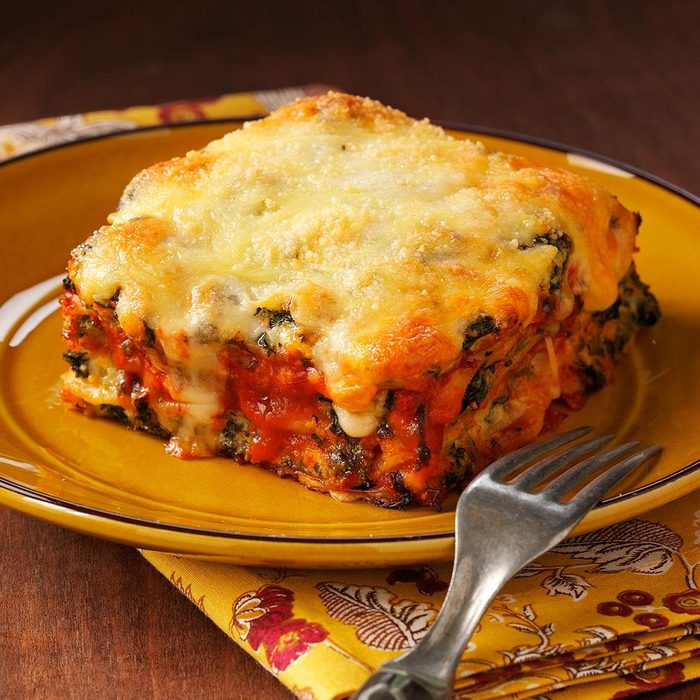

Home

Due to an injury, I'm not as active as I used to be and can't burn off the calories. Because I love Italian food, one of the first things I looked for was a low-fat lasagna. This meatless recipe is not only good, it's good for you. —E. Marie Goetz, Morgantown, Kentucky
Ingredients
- 12 uncooked lasagna noodles
- 2 packages (10 ounces each) frozen chopped spinach, thawed and squeezed dry
- 2 cartons (15 ounces each) fat-free ricotta cheese
- 1 large egg
- 1 large egg white
- 1 cup grated Parmesan cheese, divided
- 1 garlic clove, minced
- 1 teaspoon dried basil
- 1/2 teaspoon pepper
- 1/4 teaspoon ground nutmeg
- 3 cups shredded part-skim mozzarella cheese
- 2 cans (15 ounces each) tomato sauce
Directions
- Cook noodles according to package directions. Rinse in cold water; drain well.
- In a large bowl, combine the spinach, ricotta cheese, egg, egg white, 1/4 cup Parmesan cheese, garlic, basil, pepper and nutmeg. Combine mozzarella cheese and remaining Parmesan cheese.
- In a 13x9-in. baking dish coated with cooking spray, layer three noodles, 3/4 cup tomato sauce, 1 cup spinach mixture and 3/4 cup cheese mixture. Repeat layers three times.
- Bake, uncovered, at 375° for 45-50 minutes or until bubbly. Let stand for 10-15 minutes before cutting.